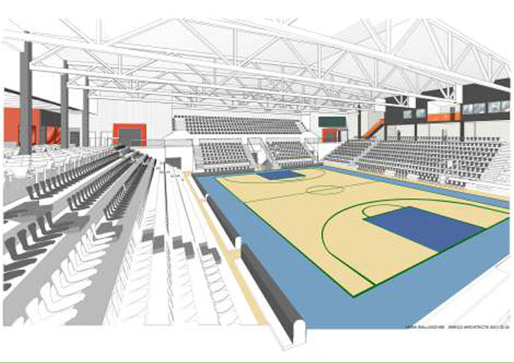

Nytt för i år i Luleå är att den årliga festivalen Luleåkalaset inte längre finns, men sörj inte! I år startar en ny festival i Luleå. Luleå Hamnfestival. I tre dagar, 11-13 juli, kommer det att vara folkfest i Luleå med grymma artister. Det bjuds på mat & dryck, underhållning, dans och mycket mer.
Läs mer om festivalen på LULEÅ hamnfestival
Norrbottens teatern byggdes 1986 och är en av Luleås mest framstående byggnader.Teatern erbjuder fantastiska pjäser och mat och dryck för den som vill det.
Läs mer om hur du bokar biljetter och vilka pjäser som går på Norrbottensteater
I juli det här året öppnar Pontushallen på nytt igen, nu med namnet Luleå Energi Arena. Under säsongen 2012/2013 har basketlagen fått spela sina matcher i Arcushallen i Karlsvik men nu till sommaren kommer den nya arenan stå redo, fräschare än någonsin.
